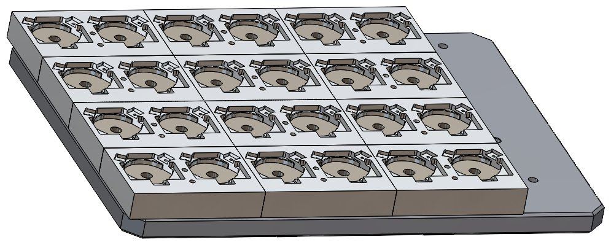
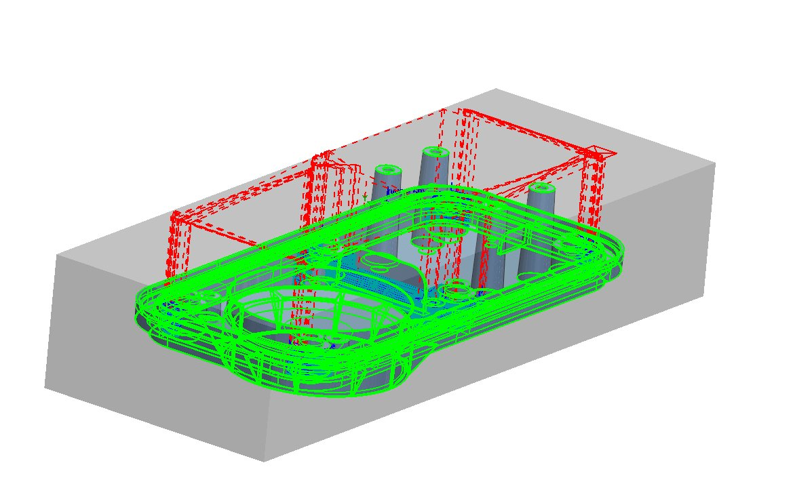

I design hardware and then build it. My work runs from CAD and engineering analysis
through CNC programming, design for manufacturability, and fabrication, into embedded
sensing and controls, and ends where it should, with a physical machine tested against real
requirements. This portfolio covers production engineering at an Amphenol subsidiary, a filament-recycling
startup I cofounded, GPU-accelerated CFD research in Brazil, and public-installation steel fabrication.
Production Engineering · DFM · CAM · Qualification · Automation
Rochester Sensors (Amphenol subsidiary)
Mechanical Engineering Intern · Dallas, TX · May – Aug 2026
Rochester builds liquid-level and pressure sensing systems for industrial and vehicle
applications. I worked across the production lifecycle: developing CNC processes and workholding, troubleshooting
in-development designs, qualifying assemblies against their field environment, and automating manual stations.
70–80%Cycle-time reduction
15+Production parts programmed
50-yearField life demonstrated
15–30/minRobotic bin-pick rate
Programmed CNC machining workflows in CamWorks for 15+ production parts and dedicated
multi-part fixtures, replacing inherited pattern-projected toolpaths to cut cycle times 70–80%, taking the highest-volume part from 182 to 34 minutes, while holding all GD&T requirements.
Acted as the design-for-manufacturability reviewer between R&D and the shop floor, developing
toolpaths and processes for other engineers' prototype parts and housings, and flagging the geometry that
quietly costs the most: unnecessary features, extra setups, and small deep pockets that force long-reach
cutters to run slow and break mid-job.
Resolved tolerance stack-up and assembly fit defects on in-development products in SolidWorks,
validating designs by machining prototypes to released dimensions and correcting a source-design misalignment
before mass production.
Executed environmental qualification testing on sensor assemblies for pre-launch client products: accelerated thermal cycling
(−40 to +125 °C), salt ingress, and vibration, demonstrating reliability beyond 50-year equivalent field life against a 30-year
design requirement.
Programmed a Universal Robots arm for vision-guided bin picking using Keyence 3D scanning,
gripping randomly oriented parts from bulk bins and sorting them at 15–30 parts/min, automating the first station of a phased plan to redeploy operator hours.
Machining strategy applied to a production component.

Multi-part workholding designed for a production run.

Finishing passes and stock-removal verification in CamWorks.
Cofounder / Mechanical Engineer · ECOFIL Team, Aggies Create · College Station, TX · Aug 2025 – May 2026
A three-machine line that turns failed 3D prints back into usable filament: a shredder, a
dehydrator, and an extruder. I lead mechanical design from CAD and analysis through fabrication, sensing, and system integration. Every machine on this page was designed and built by our team from nothing.
±0.10 mmExtruded diameter control
3 stagesShredder / dehydrator / extruder
Closed loopThermal & diameter sensing
FundedIncubator grants & donations
Designed the three-stage recycler in SolidWorks, applying GD&T to control mating fits and
hold extruded diameter to ±0.10 mm for consistent standard filament quality.
Fabricated functional prototypes of all three machines through 3D printing, CNC milling, laser cutting,
soldering, and MIG welding, providing working models for performance testing and design iteration.
Integrated the full control stack myself for real-time monitoring and control of the recycling process: Arduino controllers, high-voltage AC motors,
linear Hall-effect sensors, MOSFETs, PTC heating elements, thermistors, stepper motors, fans, and hygrometers.
Secured incubator funding and material donations from Aggies Create, Tyrex, and the TAMU Meloy
program, then managed project finances and materials through detailed BOMs to complete the recycler within budget.
Shredder assembly, exploded view in SolidWorks.Dehydrator prototype built from waterjet and welded stock.Extruder stage with hopper, heater, and spooling.
Energy Industry Internship · GPU Computing · Fluid Dynamics
Petrobras CFD Optimization
Mechanical Engineering Intern · Petrobras / Geoenergia Lab, UDESC · Florianópolis, Brazil · Jun – Aug 2025
Petrobras needed to predict how spilled oil travels and disperses through seawater, over ocean-scale domains, fast enough to guide a response. The premise was that a GPU-parallelized lattice Boltzmann solver could reach a better speed-to-accuracy point than a traditional Navier-Stokes approach. I profiled and reworked that solver, validating every speedup against the simulation's accuracy limits rather than accepting raw throughput as the result.
400%+MLUPS throughput gain
+60%Warp efficiency
56 → 36 KBPeak shared memory
+33%Stable peak Reynolds number
Optimized CUDA-based Lattice Boltzmann CFD solvers using AI-assisted kernel profiling in NVIDIA Nsight
Compute, resolving memory bottlenecks to push throughput past published open-source LBM benchmarks.
Achieved 400%+ throughput gain (MLUPS) via FP64→FP32 migration and memory-access
restructuring, validated against solver tolerances so accuracy was never traded for speed.
Authored a Python mesh-generation script for fine-to-coarse grid interfaces, raising the stable
peak Reynolds number 33% with no throughput loss.
Diagnosed uncoalesced global memory access via Nsight workload reports and remapped thread-to-data access for
60% better warp efficiency; cut peak shared memory 35% by removing redundant data staging.
Solver output visualized in ParaView.Nsight Compute kernel profiling used to find bottlenecks.Fine-to-coarse grid interface from the meshing script.
Tools CUDA · C++ · Python · NVIDIA Nsight Compute · Nsight Systems · ParaView · Lattice Boltzmann methods
JASPER BUNTINX · PROJECT PORTFOLIO4
Structural Design · Fabrication · Public Installation
Creek Show Dragonflies
Mechanical Engineering Intern · Waterloo Greenway Conservancy · Austin, TX · May 2022 – Jan 2023
Austin's Creek Show installs large-scale illuminated art over Waller Creek each fall. I
translated artist concepts into four illuminated steel sculptures: engineered, fabricated, wired, and installed over a live urban creek, with each dragonfly carrying its own unique wing geometry.
4Unique sculptures
14+ ftWingspan
200+Welded joints
−30%Peak wind and flood load
Derived four unique SolidWorks assemblies from Odonata LLC artist samples, enabling
production of four large metal dragonfly structures with 14-ft+ wingspans after extensive iteration and prototyping.
Led fabrication of the full-scale structures: laser-cut eight unique wing designs via Fusion 360
CAM, welded 200+ joints, soldered wiring for four LED displays, and produced water-resistant electronics packaging
for permanent outdoor exposure.
Cut peak wind and flood loads 30% by swapping hard plastic shells for a microporous ePTFE
membrane, then reinforced against peak bending moments with wing reorientation, a widened steel base, and
300 lb of ballast per structure, verified in SolidWorks Simulation.
Delivered completed installations ready for the show, including on-site assembly and mounting in the creek bed.
The completed installation over the creek at night.Welded wing frame on the fabrication jig.On-site installation in the creek bed.
Independent prototypes, competition robotics, and design coursework
RoomCleaner: Laundry-Picking Cable Robot
Personal project · Dallas, TX · May 2026 – Present
Room-scale four-winch cable robot that finds laundry with an overhead camera (YOLO, OpenCV) and carries
it to a hamper. Derived the inverse kinematics, sized NEMA 17 steppers to 2.6×
worst-case tension, and built the fused, kill-switched electrical system with fail-safe homing and a
wireless ESP32 end-effector. Modeled 10+ printed parts including a five-finger tendon-driven TPU gripper.
Personal project · College Station, TX · Dec 2025 – Present
Frame-mounted, NFC-unlocked lock with a retractable steel cable: a 15-part 3D-printed
clamshell integrating a solenoid latch, PN532 RFID reader, Arduino Nano, Li-ion power, and a spring-loaded
spool. PETG housing with a TPU liner fits Ø27–46 mm frames. At its eighth
revision, with a CNC-milled stainless version next.
Full drivetrain swap on a worn-out gas tractor: tore down the gas drivetrain, removed the
engine and fuel system, and evaluated the transaxle for reuse. Welded in an electric transaxle and
built the battery system and wiring into the former engine bay, making the machine fully electric.
A two-player spring-powered tabletop soccer game designed for elderly couples and former
athletes, taken from concept sketches to a working all-3D-printed prototype. Built almost entirely
in PLA with only springs and suction feet sourced, keeping the build near $43.
1st Place · 2024 VEX U OVER UNDER State Championship
Aggie Robotics (Team WHOOP5), plus World Championship placement. Contributed AutoCAD schematic redesign and
iterative development of an extendable friction launcher to retain, launch, or push Tri-Balls on demand.
Special Events Logistics Chair · One Army Men's Organization
Led large event construction on a $30K+ annual budget, taking builds from design and mockup through BOM and
fabrication with 80+ members, supporting Gladiator Dash, a 5K raising $180K+ annually.